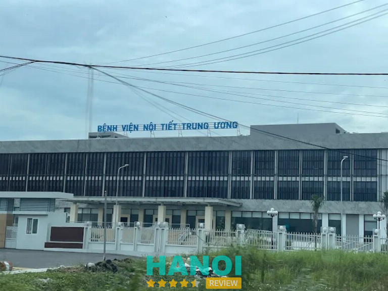
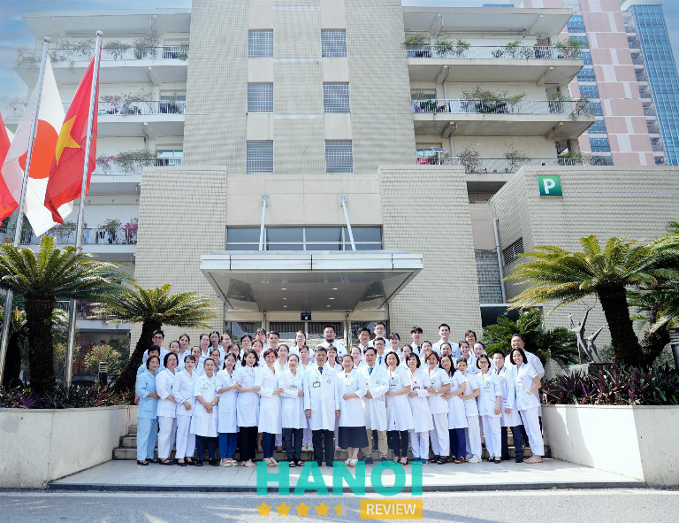
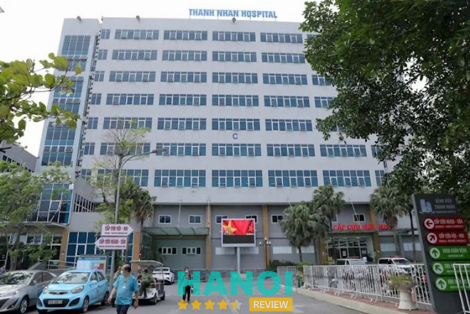
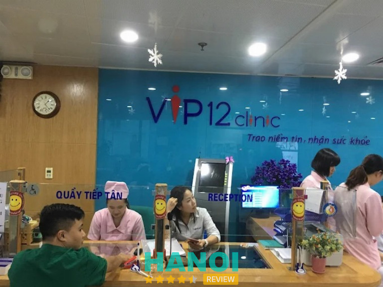

10 Địa chỉ khám nội tiết ở Hà Nội uy tín với bác sĩ đầu ngành
Việc lựa chọn địa chỉ khám nội tiết ở Hà Nội đóng vai trò then chốt giúp bạn kiểm soát sớm các rối loạn về chuyển hóa, tuyến giáp hay tiểu đường hiệu quả. Với hệ thống y tế hiện đại cùng đội ngũ chuyên gia dày dặn kinh nghiệm, thủ đô là nơi tập trung nhiều cơ sở chất lượng cao.
Top 10 Địa chỉ khám nội tiết tại Hà Nội Giúp Điều Trị Bệnh Dứt Điểm
Tại khu vực phía Bắc, nhu cầu tìm kiếm các cơ sở y tế chuyên sâu để tầm soát bệnh lý nội tiết ngày càng tăng cao. Những đơn vị được đánh giá cao thường sở hữu hệ thống xét nghiệm hormone chính xác và các thiết bị chẩn đoán hình ảnh tiên tiến. Việc thăm khám định kỳ tại những cơ sở này giúp bệnh nhân phát hiện sớm các bất thường, từ đó tối ưu hóa phác đồ điều trị và nâng cao chất lượng cuộc sống bền vững.
Bệnh viện Nội tiết Trung ương – P. Yên Sở
Bệnh viện Nội tiết Trung ương hiện là cơ sở y tế đầu ngành, chuyên tiếp nhận và điều trị các bệnh lý tuyến cuối về nội tiết và rối loạn chuyển hóa tại khu vực phía Bắc. Đây là địa chỉ tin cậy dành cho những người đang tìm kiếm một bệnh viện khám nội tiết ở Hà Nội có quy mô lớn và chuyên sâu. Đơn vị sở hữu đội ngũ chuyên gia, y bác sĩ có trình độ chuyên môn cao, thường xuyên cập nhật các phương pháp điều trị tiên tiến nhất trên thế giới.

Hệ thống hạ tầng tại đây được đầu tư đồng bộ với các đặc điểm nổi bật sau:
- Hệ thống máy xét nghiệm máu, xét nghiệm hormone tự động cho kết quả nhanh chóng.
- Máy siêu âm đàn hồi mô tuyến giáp hiện đại giúp chẩn đoán chính xác khối u.
- Khu điều trị nội trú sạch sẽ, đáp ứng nhu cầu của bệnh nhân ở xa.
- Quy trình khám bệnh được tối ưu hóa để giảm thời gian chờ đợi cho người dân.
- Ứng dụng công nghệ cao trong phẫu thuật nội soi tuyến giáp.
Khi lựa chọn bệnh viện khám nội tiết ở Hà Nội này, người bệnh sẽ được thăm khám kỹ lưỡng và tư vấn phác đồ cá nhân hóa. Việc tầm soát định kỳ giúp phát hiện sớm các vấn đề về đường huyết, tuyến thượng thận hay các rối loạn chức năng khác. Để bảo vệ sức khỏe và nhận được sự chăm sóc từ các chuyên gia hàng đầu, quý khách nên sắp xếp thời gian đến thăm khám trực tiếp tại bệnh viện ngay hôm nay.
Thông tin liên hệ:
- Địa chỉ: Nguyễn Bồ, P. Yên Sở, Hà Nội
- Điện thoại: 1900 8219
- Email: quantri.bvnt@gmail.com
- Website: benhviennoitiet.vn
- Facebook: fb.com/National.Hospital.of.Endocrinology
Bệnh Viện Bạch Mai – P. Kim Liên
Khoa Nội tiết – Đái tháo đường thuộc Bệnh viện Bạch Mai là địa chỉ chuyên sâu dành cho người dân đang tìm kiếm bệnh viện khám nội tiết ở Hà Nội. Đơn vị tập trung các chuyên gia đầu ngành, tiêu biểu là TS.BS Nguyễn Quang Bảy, hỗ trợ xử lý nhiều mặt bệnh lý từ cơ bản đến phức tạp.

Để tối ưu hóa quá trình thăm khám, người bệnh có thể cân nhắc các lựa chọn sau:
- Đăng ký khám trực tiếp tại Khoa Nội tiết – Đái tháo đường để được tư vấn chuyên sâu.
- Lựa chọn Khoa khám bệnh theo yêu cầu tại tòa nhà K1 giúp tiết kiệm thời gian chờ đợi.
- Thăm khám cùng đội ngũ bác sĩ trình độ cao, tiêu biểu là TS.BS Nguyễn Quang Bảy.
- Thực hiện các xét nghiệm chẩn đoán và điều trị bệnh lý đái tháo đường, tuyến giáp.
Việc lựa chọn khu vực khám theo yêu cầu tại nhà K1 giúp quá trình làm thủ tục và tiếp nhận kết quả diễn ra nhanh chóng hơn so với các khu vực thông thường. Đây là phương án phù hợp cho những ai có quỹ thời gian hạn hẹp nhưng vẫn muốn thụ hưởng dịch vụ y tế chất lượng từ đội ngũ chuyên gia giàu trình độ của bệnh viện.
Khi cơ thể xuất hiện các dấu hiệu bất thường liên quan đến đường huyết, chuyển hóa hoặc nội tiết tố, người bệnh cần sớm liên hệ và sắp xếp thời gian thăm khám tại Bệnh viện Bạch Mai. Việc phát hiện và can thiệp kịp thời giúp kiểm soát tình trạng sức khỏe hiệu quả, tránh những biến chứng không đáng có.
Hãy chủ động bảo vệ sức khỏe bằng cách thăm khám định kỳ tại bệnh viện khám nội tiết ở Hà Nội uy tín để nhận được sự tư vấn chuyên môn xác đáng nhất.
Thông tin liên hệ:
- Địa chỉ: 78 Giải Phóng, P. Kim Liên, Hà Nội
- Điện thoại: 1900 888 866
- Email: congvandenctxh@gmail.com
- Website: bachmai.gov.vn
- Facebook: fb.com/benhvienbachmai1911
Bệnh viện Đại học Y Hà Nội – P. Kim Liên
Bệnh viện Đại học Y Hà Nội là một trong những địa chỉ khám bệnh nội tiết ở Hà Nội được nhiều người quan tâm khi cần kiểm tra và theo dõi các vấn đề liên quan đến hóc môn và chuyển hóa. Tại đây có chuyên khoa Nội tiết tiếp nhận thăm khám các bệnh lý như rối loạn tuyến giáp, đái tháo đường, rối loạn chuyển hóa và các vấn đề nội tiết khác. Quy trình khám được đánh giá chuyên nghiệp, môi trường sạch sẽ, tạo cảm giác yên tâm trong suốt quá trình thăm khám.
Bệnh viện triển khai dịch vụ khám theo yêu cầu, hỗ trợ sắp xếp thời gian linh hoạt. Người bệnh có thể lựa chọn hình thức phù hợp để giảm thời gian chờ đợi. Hệ thống thiết bị phục vụ chẩn đoán và theo dõi bệnh nội tiết được chú trọng, góp phần hỗ trợ bác sĩ trong việc đánh giá tình trạng sức khỏe.
Điểm nổi bật khi khám nội tiết ở Bệnh viện Đại học Y Hà Nội:
- Có chuyên khoa Nội tiết riêng biệt
- Tiếp nhận đa dạng bệnh lý liên quan гормone
- Dịch vụ khám theo yêu cầu thuận tiện
- Môi trường khám sạch sẽ, quy trình rõ ràng
Đối với các dấu hiệu như mệt mỏi kéo dài, thay đổi cân nặng bất thường, rối loạn giấc ngủ, tim đập nhanh hoặc nghi ngờ rối loạn đường huyết, việc thăm khám sớm tại địa chỉ khám bệnh nội tiết ở Hà Nội giúp kiểm soát tình trạng kịp thời. Liên hệ trực tiếp với bệnh viện để được hướng dẫn đăng ký khám và lựa chọn dịch vụ phù hợp với nhu cầu.
Thông tin liên hệ:
- Địa chỉ: Số 1 Tôn Thất Tùng, P. Kim Liên, Hà Nội
- Điện thoại: 1900 6422
- Email: benhviendaihocyhanoi@hmuh.vn
- Website: benhviendaihocyhanoi.com
- Facebook: fb.com/HMUHospital
Bệnh viện Trung ương Quân đội 108 – P. Hai Bà Trưng
Khám nội tiết ở Hà Nội tại Bệnh viện Trung ương Quân đội 108 được thực hiện chuyên sâu tại Khoa Nội tiết (A14), tiếp nhận các bệnh lý như đái tháo đường, rối loạn tuyến giáp, tuyến yên và tuyến thượng thận. Quy trình thăm khám kết hợp lâm sàng và cận lâm sàng giúp xác định tình trạng bệnh rõ ràng, hỗ trợ định hướng điều trị phù hợp theo từng trường hợp cụ thể.
Chi phí tham khảo tại đây gồm phí khám lâm sàng khoảng 300.000đ/lần, xét nghiệm máu khoảng 120.000đ/mẫu. Gói khám sức khỏe tổng quát dao động từ 1.140.000đ đến hơn 17.000.000đ tùy danh mục kiểm tra. Bảo hiểm y tế áp dụng theo quy định khi khám đúng tuyến hoặc có giấy chuyển viện.
Các nhóm xét nghiệm thường được chỉ định gồm:
- Tuyến giáp: kiểm tra TSH, FT3, FT4 kết hợp siêu âm phát hiện u, nhân hoặc viêm
- Đái tháo đường: đo đường huyết lúc đói và HbA1c đánh giá trung bình 3 tháng
- Nội tiết sinh sản: xét nghiệm LH, FSH, Estrogen, Testosterone
- Tuyến thượng thận/tuyến yên: kiểm tra Cortisol, ACTH khi có nghi vấn bệnh lý
Hệ thống máy PET/CT hiện đại hỗ trợ tầm soát và phát hiện sớm ung thư tuyến giáp. Từ tháng 1/2026, khu khám được sắp xếp lại, cần theo dõi biển chỉ dẫn tại sảnh chính khi đến thăm khám.
Nếu đang gặp dấu hiệu rối loạn nội tiết như mệt mỏi kéo dài, tăng cân bất thường, rối loạn kinh nguyệt hoặc đường huyết không ổn định, nên liên hệ đặt lịch sớm để được kiểm tra và làm xét nghiệm cần thiết, tránh để tình trạng kéo dài ảnh hưởng sức khỏe lâu dài.
Thông tin liên hệ:
- Địa chỉ: Số 1 Trần Hưng Đạo, P. Hai Bà Trưng, Hà Nội
- Điện thoại: 0971 830 166
- Email: bvtuqd108@benhvien108.vn
- Website: benhvien108.vn
- Facebook: fb.com/Benhvientwqd108
Bệnh viện Thanh Nhàn – P. Bạch Mai
Việc tìm kiếm địa chỉ khám nội tiết ở Hà Nội uy tín là nhu cầu thiết yếu của nhiều người dân, đặc biệt tại khu vực quận Hai Bà Trưng. Bệnh viện Thanh Nhàn hiện là cơ sở y tế hạng I của thành phố, trong đó khoa Nội tiết được xác định là một trong những chuyên khoa mũi nhọn. Đơn vị này sở hữu sự đầu tư đồng bộ về cả yếu tố con người lẫn hệ thống trang thiết bị kỹ thuật hiện đại, phục vụ hiệu quả cho công tác chẩn đoán và điều trị các bệnh lý chuyển hóa.

Sức hút của khoa Nội tiết tại đây đến từ việc chú trọng phát triển đội ngũ nhân sự chuyên môn cao. Các bác sĩ thường xuyên được cập nhật các phác đồ điều trị mới nhất, giúp nâng cao độ chính xác trong việc tầm soát bệnh.
Những điểm nổi bật về năng lực chuyên môn tại khoa:
- Hệ thống máy xét nghiệm hóa sinh, miễn dịch hiện đại giúp chẩn đoán nhanh các chỉ số đường huyết, hormone tuyến giáp và thượng thận.
- Ứng dụng kỹ thuật chẩn đoán hình ảnh tiên tiến như siêu âm doppler tuyến giáp, chụp CT-Scanner trong phát hiện khối u nội tiết.
- Quy trình quản lý bệnh nhân tiểu đường, bướu cổ và rối loạn mỡ máu được xây dựng bài bản, khoa học.
- Triển khai các kỹ thuật can thiệp ít xâm lấn, hỗ trợ tối ưu cho quá trình hồi phục của người bệnh.
Với sự tập trung mạnh mẽ vào kỹ thuật chuyên sâu, đây là điểm đến đáng tin cậy cho những ai đang cân nhắc việc khám nội tiết ở Hà Nội. Người dân có thể trực tiếp đến khu khám bệnh của bệnh viện để được tư vấn và thực hiện các kiểm tra chuyên khoa cần thiết.
Thông tin liên hệ:
- Địa chỉ: 42 Thanh Nhàn, P. Bạch Mai, Hà Nội
- Điện thoại: 0965 371 616
- Email: bvtn@hanoi.gov.vn
- Website: thanhnhanhospital.vn
- Facebook: fb.com/61579643916287
Bệnh viện Đa khoa Bảo Sơn – Đống Đa
Bệnh viện Đa khoa Bảo Sơn là địa chỉ khám nội tiết ở Hà Nội uy tín, chất lượng và được nhiều bệnh nhân tin tưởng. Bệnh viện triển khai thăm khám và điều trị thông qua Khoa Nội tổng hợp.
Đội ngũ bác sĩ chuyên khoa có kinh nghiệm nhiều năm, nổi bật với TS. BS Phạm Thị Hồng Hoa, từng giữ vai trò Trưởng khoa Nội tiết – Đái tháo đường tại Bệnh viện Bạch Mai. Hoạt động chẩn đoán và điều trị tập trung vào các rối loạn hormone phổ biến, kết hợp hệ thống xét nghiệm hỗ trợ đánh giá chính xác.
Các nhóm bệnh và dịch vụ được thực hiện:
- Đái tháo đường: kiểm soát đường huyết, theo dõi biến chứng
- Bệnh lý tuyến giáp: bướu nhân, cường giáp, suy giáp
- Rối loạn chuyển hóa: mỡ máu, mất cân bằng hormone
- Xét nghiệm nội tiết: tuyến yên, tuyến thượng thận, nội tiết tố nam và nữ
Địa chỉ khám nội tiết ở Hà Nội này vận hành theo mô hình bệnh viện – khách sạn với cơ sở vật chất sạch sẽ, quy trình rõ ràng, có hướng dẫn tại từng khu vực. Hệ thống hỗ trợ thanh toán bảo hiểm bảo lãnh giúp giảm thời gian chờ, phù hợp với người cần kiểm tra định kỳ hoặc theo dõi lâu dài.
Khi xuất hiện dấu hiệu như mệt mỏi kéo dài, rối loạn cân nặng, tim đập nhanh, run tay, mất ngủ, thay đổi nội tiết, cần đi khám sớm để kiểm tra và theo dõi. Nhu cầu thăm khám nên được thực hiện định kỳ nhằm phát hiện sớm bất thường, hạn chế biến chứng và duy trì sức khỏe ổn định lâu dài, tránh diễn tiến âm thầm ảnh hưởng toàn diện cơ thể.
Thông tin liên hệ:
- Địa chỉ: 52 Nguyễn Chí Thanh, Đống Đa, Hà Nội
- Điện thoại: 1900 599 858
- Email: info@baosonhospital.com
- Website: baosonhospital.com
- Facebook: fb.com/baosonhospital
Phòng khám Đa khoa VIP 12 – P. Bạch Mai
Phòng khám Đa khoa VIP 12 có chuyên khoa Nội tiết, tập trung vào chẩn đoán và điều trị các rối loạn nội tiết và chuyển hóa. Đây là một trong những mũi nhọn tại cơ sở, đáp ứng nhu cầu khám nội tiết ở Hà Nội với quy trình bài bản, rõ ràng và đầy đủ dịch vụ cận lâm sàng.

Đội ngũ bác sĩ tại đây quy tụ nhiều Giáo sư, Tiến sĩ, Bác sĩ nội trú đang công tác tại Khoa Nội tiết – Đái tháo đường của Bệnh viện Bạch Mai. Việc thăm khám được thực hiện theo hướng chuyên sâu, tập trung vào từng nhóm bệnh lý cụ thể.
Các dịch vụ khám và điều trị bao gồm: đái tháo đường, bệnh lý tuyến giáp như bướu giáp, cường giáp, suy giáp; suy tuyến thượng thận, suy tuyến yên và các rối loạn chuyển hóa khác. Hệ thống thiết bị hỗ trợ đầy đủ xét nghiệm máu, siêu âm và nội soi, giúp đưa ra kết quả chẩn đoán rõ ràng.
Một số điểm đáng chú ý:
- Bác sĩ chuyên môn cao từ tuyến trung ương
- Khám và điều trị đa dạng bệnh nội tiết
- Trang thiết bị phục vụ xét nghiệm, chẩn đoán đầy đủ
- Hỗ trợ bánh mì và sữa sau khi lấy máu xét nghiệm
Việc lựa chọn địa chỉ khám nội tiết ở Hà Nội phù hợp góp phần giúp quá trình theo dõi sức khỏe diễn ra thuận tiện hơn. Phòng khám Đa khoa VIP 12 là một trong những nơi được nhiều người tìm hiểu khi cần kiểm tra các vấn đề liên quan đến nội tiết và chuyển hóa.
Nếu đang cần khám nội tiết ở Hà Nội, có thể cân nhắc liên hệ Phòng khám Đa khoa VIP 12 để được sắp xếp lịch phù hợp. Chủ động kiểm tra sớm giúp theo dõi tình trạng sức khỏe rõ ràng hơn và lựa chọn hướng điều trị phù hợp với từng trường hợp cụ thể.
Thông tin liên hệ:
- Địa chỉ: Tầng 3 – 4, Tòa nhà Hòa Phát, Số 257 Giải Phóng, P. Bạch Mai, Hà Nội
- Điện thoại: 1800 585 829
- Email: phongkhamvip12@gmail.com
- Website: vip12clinic.com
- Facebook: fb.com/vip12clinic
Bệnh viện Đa khoa Hồng Ngọc – P. Ba Đình
Bệnh viện Đa khoa Hồng Ngọc được biết đến là một trong những địa chỉ khám nội tiết ở Hà Nội có chất lượng dịch vụ cao cấp. Quy trình thăm khám được triển khai theo hướng nhanh gọn, giúp tiết kiệm thời gian khi thực hiện các xét nghiệm tầm soát bệnh lý nội tiết. Không gian khám chữa bệnh được tổ chức khoa học, hỗ trợ quá trình kiểm tra diễn ra thuận lợi.

Hoạt động xét nghiệm nội tiết tại đây tập trung vào các bước cần thiết nhằm phát hiện sớm các rối loạn liên quan đến tuyến giáp, tuyến yên hoặc chuyển hóa. Hệ thống máy móc phục vụ xét nghiệm được đầu tư đồng bộ, giúp quá trình lấy mẫu và phân tích diễn ra chính xác, rõ ràng.
Một số đặc điểm khi lựa chọn khám nội tiết tại đây:
- Dịch vụ theo tiêu chuẩn cao cấp
- Quy trình khám và xét nghiệm được rút gọn
- Thời gian chờ đợi được tối ưu
- Phù hợp với nhu cầu tầm soát bệnh lý nội tiết
Với định hướng tập trung vào trải nghiệm khám nhanh và hiệu quả, cơ sở này phù hợp cho những trường hợp cần kiểm tra sức khỏe nội tiết định kỳ hoặc thực hiện các xét nghiệm chuyên sâu.
Nếu đang tìm kiếm địa chỉ khám nội tiết ở Hà Nội với quy trình nhanh, dịch vụ cao cấp, có thể cân nhắc lựa chọn phù hợp để chủ động kiểm tra sức khỏe. Liên hệ trực tiếp để được hướng dẫn đặt lịch, lựa chọn gói xét nghiệm và sắp xếp thời gian thăm khám thuận tiện, giúp quá trình kiểm tra diễn ra nhanh chóng, rõ ràng, tiết kiệm thời gian chờ đợi và dễ dàng theo dõi kết quả.
Thông tin liên hệ:
- Địa chỉ: Số 55 Phố Yên Ninh, P. Ba Đình, Hà Nội
- Điện thoại: 024 3927 5568
- Email: info@hongngochospital.vn
- Website: hongngochospital.vn
- Facebook: fb.com/BenhvienHongNgoc
Phòng Khám Nội Tiết Bác Sĩ Hóa – Đống Đa
Phòng Khám Nội Tiết Bác Sĩ Hóa tập trung thăm khám và điều trị các bệnh lý liên quan đến hệ nội tiết và chuyển hóa. Danh mục bệnh đa dạng, đáp ứng nhu cầu kiểm tra sức khỏe từ cơ bản đến chuyên sâu. Quy trình khám rõ ràng, phù hợp với người cần theo dõi lâu dài các rối loạn nội tiết.
Các bệnh lý được tiếp nhận:
- Bướu cổ, bệnh Basedow
- Viêm tuyến giáp tự miễn
- Đái tháo đường, đái tháo đường thai kỳ, đái tháo nhạt
- Bệnh gout, các bệnh chuyển hóa
- Rối loạn tiết tố nữ, tiền mãn kinh
- Buồng trứng đa nang, nhám da
- Bệnh gan liên quan chuyển hóa
- Hỗ trợ tăng chiều cao cho trẻ chưa đến tuổi dậy thì
Phòng khám hướng đến việc phát hiện sớm và theo dõi tiến triển bệnh lý nội tiết, giúp người bệnh có kế hoạch chăm sóc sức khỏe phù hợp. Dịch vụ phù hợp với nhiều đối tượng như người có dấu hiệu rối loạn hormone, người cần kiểm soát đường huyết, phụ nữ gặp vấn đề nội tiết.
Liên hệ đặt lịch khám để được tư vấn chi tiết, hỗ trợ kiểm tra sớm, lựa chọn thời gian phù hợp, đăng ký nhanh chóng, chủ động sắp xếp lịch, nhận hướng dẫn cụ thể, tiết kiệm thời gian chờ, tiếp cận dịch vụ thuận tiện, giải đáp thắc mắc, hỗ trợ đặt lịch ngay hôm nay, gọi điện hoặc nhắn tin để được hướng dẫn, đăng ký khám nhanh, nhận lịch hẹn sớm, trao đổi trực tiếp để nắm rõ nhu cầu.
Thông tin liên hệ:
- Địa chỉ: 29 P. Yên Lãng, Trung Liệt, Đống Đa, Hà Nội
- Điện thoại: 0913 581 737
Bệnh viện Đa khoa Quốc tế Thu Cúc – P. Tây Hồ
Bệnh viện Đa khoa Quốc tế Thu Cúc là một trong những địa chỉ khám nội tiết ở Hà Nội được nhiều người cân nhắc khi cần dịch vụ nhanh và cơ sở vật chất hiện đại. Chuyên khoa Nội tiết tại đây tập trung vào thăm khám, tầm soát và theo dõi các bệnh lý liên quan đến rối loạn nội tiết phổ biến.

Hệ thống trang thiết bị được đầu tư đồng bộ, hỗ trợ quá trình kiểm tra và chẩn đoán diễn ra nhanh chóng. Quy trình khám được tối ưu giúp tiết kiệm thời gian, phù hợp với người bận rộn hoặc cần kiểm tra sức khỏe định kỳ.
Một số dịch vụ nội tiết đang được triển khai:
- Thăm khám và tầm soát bệnh lý tuyến giáp
- Điều trị u lành tuyến giáp bằng phương pháp đốt sóng cao tần (RFA)
- Theo dõi và quản lý đái tháo đường
- Kiểm tra các rối loạn nội tiết thường gặp
Đội ngũ bác sĩ tại chuyên khoa Nội tiết có kinh nghiệm trong việc đánh giá và đưa ra hướng xử lý phù hợp cho từng tình trạng bệnh. Các danh mục kiểm tra được thực hiện theo từng gói hoặc chỉ định riêng, hỗ trợ phát hiện sớm các vấn đề liên quan đến nội tiết.
Với định hướng phát triển dịch vụ y tế chất lượng cao, đây là một lựa chọn đáng cân nhắc khi tìm kiếm địa chỉ khám nội tiết ở Hà Nội, đặc biệt trong các trường hợp cần tầm soát tuyến giáp hoặc kiểm soát đường huyết định kỳ.
Thông tin liên hệ:
- Địa chỉ: 286 Thụy Khuê, P. Tây Hồ, Hà Nội
- Điện thoại: 1900 558 892
- Email: cskh@thucuchospital.vn
- Website: benhvienthucuc.vn
- Facebook: fb.com/bvtc.hn
Tiêu chí chọn nơi khám nội tiết ở Hà Nội chất lượng
Để tìm được nơi chăm sóc sức khỏe tốt nhất, bạn cần dựa vào những quy chuẩn khắt khe về trình độ chuyên môn cũng như trang thiết bị y tế.
- Đội ngũ bác sĩ: Các chuyên gia phải có kinh nghiệm lâu năm trong việc điều trị các bệnh lý về tuyến giáp, tiểu đường và các rối loạn nội tiết tố.
- Trang thiết bị: Cơ sở vật chất cần được đầu tư hiện đại với hệ thống máy siêu âm, máy xét nghiệm máu đạt tiêu chuẩn quốc tế và độ chính xác cao.
- Quy trình khám: Thủ tục đăng ký cần nhanh chóng, minh bạch và có sự hỗ trợ tận tình từ đội ngũ nhân viên y tế trong suốt quá trình thăm khám.
- Chi phí dịch vụ: Bảng giá các loại xét nghiệm và phí tư vấn phải được niêm yết công khai, phù hợp với điều kiện kinh tế của đại đa số người dân.
- Phản hồi khách hàng: Những đánh giá tích cực từ các bệnh nhân đã từng điều trị trước đó là minh chứng rõ ràng nhất cho chất lượng dịch vụ của đơn vị.
- Vị trí địa lý: Địa điểm thuận tiện cho việc di chuyển và có bãi đỗ xe rộng rãi giúp giảm bớt mệt mỏi cho người bệnh trong những ngày đi khám.
- Dịch vụ hậu mãi: Khả năng hỗ trợ tư vấn trực tuyến sau khi khám và nhắc lịch tái khám định kỳ giúp bệnh nhân theo dõi sát sao tình trạng sức khỏe bản thân.
Việc chủ động tìm hiểu thông tin và lựa chọn đúng địa chỉ khám nội tiết ở Hà Nội là bước đi quan trọng nhất để bảo vệ sức khỏe hệ thống chuyển hóa của bạn. Sự kết hợp giữa bác sĩ giỏi và công nghệ hiện đại sẽ mang lại kết quả chẩn đoán chính xác nhất. Đừng trì hoãn việc kiểm tra định kỳ, hãy liên hệ ngay với các cơ sở uy tín để được tư vấn và điều trị kịp thời nhất.
Có thể bạn quan tâm
- 10 Trung tâm vật lý trị liệu ở Hà Nội uy tín giúp phục hồi nhanh chóng
- 5 Thầy thuốc bắt mạch giỏi tại Hà Nội nổi tiếng, khám tận tâm
- 10 Địa chỉ khám trĩ ở Hà Nội thăm khám kín đáo và điều trị hiệu quả
- 10 Địa chỉ khám vô sinh hiếm muộn ở Hà Nội uy tín
DOANH NGHIỆP: Đăng tải thông tin MIỄN PHÍ.
Tin đọc nhiều


5 Phòng khám sản phụ khoa tại Q. Hoàn Kiếm chuyên nghiệp, sạch sẽ
Quận Hoàn Kiếm là trung tâm của thủ đô Hà Nội, nơi tập trung nhiều bệnh viện và phòng khám có chất lượng. Đối với...
5 Phòng khám sản phụ khoa tại Q. Long Biên được đánh giá cao
Trong hành trình chăm sóc sức khỏe, việc tìm kiếm một phòng khám phụ khoa tại Q. Long Biên uy tín, đáp ứng đầy đủ...

Trở thành người đầu tiên bình luận cho bài viết này!